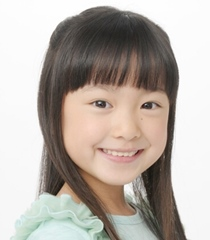

Erena Kamata is a Japanese voice actress.
- Gender: Female
| |
Erena Kamata is a Japanese voice actress.
|
 |
|---|
 |
Maria Ishida | A Silent Voice | Maria Ishida is Shouya's young niece who lives with him and his family. She is half-Japanese and half-Brazilian. |